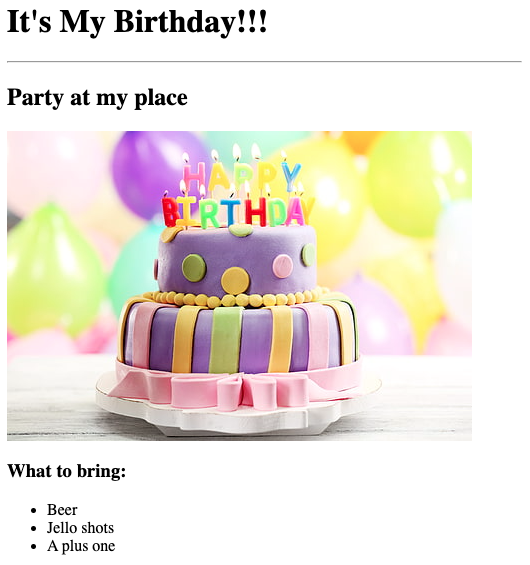
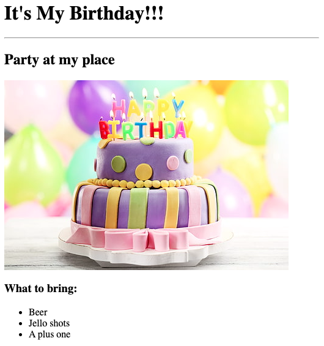
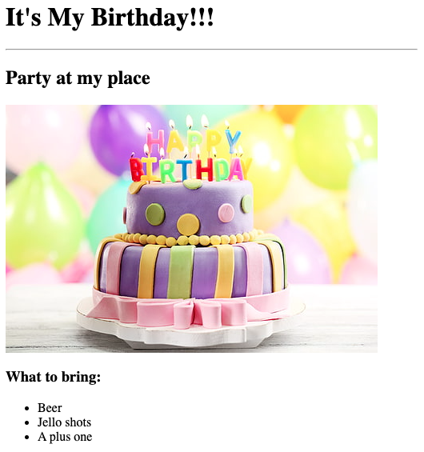

Ayokunmi's Portfolio
I am a Web Developer
Here are some of my projects
Movie Ranking List
Birthday invite

Here is a little about me
About me
Here is how to reach me
Contact Me
 Birthday invite

Birthday invite
